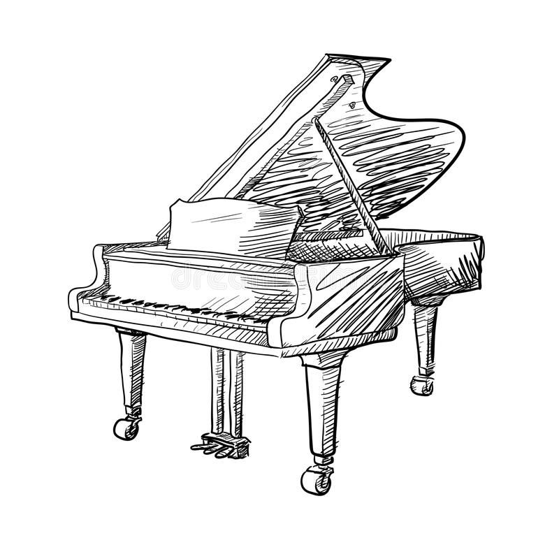
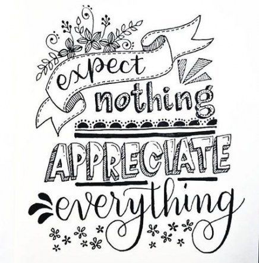

I am currently a first-year student at ESSEC Business School, preparing a 4 year degree BBA in English track. I am very adaptable, and love challenges. As a curious person that grew up in an international envrionment, I am always looking for opportunities and new perspectives.
What is the GBBA?About my baccalaureate 🎓
I graduated from a public Franco-German school, the only one in France, ranked first upon the Highschool from "Ile-de-France".
What is the LFA?About my experiences 💼
I have several work experiences: I effectued an internship in Germany, I also did some homework help with 3 children, and I worked punctually during rush periods in a high range hairsalon.
About my hobbies 😎
I have played the piano for more than 10 years, I also enjoy calligraphy and running.
 
About my other diplomas ✍🏼
I obtained two online certificates: the first one being about spreadsheet modelisation, dispensed by Harvard Publishing Education, and the second one being a certificate about introduction to psychology, dispensed by Yale on the Coursera platform.